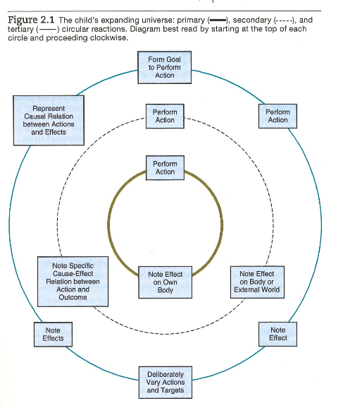

flowchart LR A(Body) -->|Sensation| B(Nervous System) B -->|Response| A
On Piaget
2025-09-05
Rick Gilmore
Department of Psychology
Prelude
– Madonna (2017)
Today’s topics
Check-in on HTA
- Relevance?
- Utility?
- Do task demands/abilities change across development?
- What are the tasks of the infant, toddler, pre-schooler, etc.?
Background ideas
Gilmore’s influences
- Chomsky (Chomsky, 1959): nativist psycholinguistics
- Marr (Marr, 1980): neurally inspired computational modeling
- Gibson (J. J. Gibson, 1966; James J. Gibson, 1986): Perception & action, ecological approach
- Johnson (Johnson, 2001): Developmental cognitive neuroscience
- Ph.D. Committee members: Bob Siegler, Jay McClelland, Marlene Behrmann, Daniel Simons
Gilmore’s influences

Newcombe (2013) Table 1
On mechanism


On mechanism
- Physical devices subject to physical laws
- The automata (Wikipedia contributors, 2025f) metaphor in psychology
- Mind, brain, body problem (Wikipedia contributors, 2025a)

On mechanism
- Is the human mind/brain/body a machine?
- What are the parts?
- How do they connect and interact?
- What do they do?

On state spaces
…a mathematical model of a physical system that uses state variables to track how inputs shape system behavior over time.
…These state variables change based on their current values and inputs, while outputs depend on the states and sometimes the inputs too.
– Wikipedia contributors (2025g)
On state spaces
…The internal state variables are the smallest possible subset of system variables that can represent the entire state of the system at any given time…

Wikipedia contributors (2025g)
On state spaces
In computer science, a state space is a discrete space representing the set of all possible configurations of a system…State spaces are useful in computer science as a simple model of machines.
– Wikipedia contributors (2025h)
On state spaces
- Representations \(\rightarrow\) states (\(s\))
- Processes \(\rightarrow\) changes in state across time
- \(s_{next}=s_{now}+\delta s\), where \(\delta s\) is a change in state.
- Time scale of states, changes?
- \(s(t+1)=F(s(t))\)
On state spaces
- What is the state of the child’s mind/brain/body at time t?
- How does that state change over some time interval?
- Short term: behavior
- Longer term: learning or adaptation or development
- Really long term: evolution
On state spaces
flowchart LR A(Body) -->|Sensation| B(Nervous System) B --> B B -->|Response| A
On state spaces
flowchart TD W(World) --> W W -->|Experience| B(Body) B -->|Behavior| W B --> B B -->|Sensation| N(Nervous system) N -->|Response| B N -->|Cognition| N
On state spaces

Swanson (n.d.)
- Separable but interacting neural pathways
- Input (from world and body state)
- Output (to body and world)
On reflexes
In biology, a reflex, or reflex action, is an involuntary, unplanned sequence or action and nearly instantaneous response to a stimulus…
A reflex occurs via neural pathways in the nervous system called reflex arcs…
– Wikipedia contributors (2025j)
On reflexes
These neural signals do not always travel to the brain, so many reflexes are an automatic response to a stimulus that does not receive or need conscious thought.
– Wikipedia contributors (2025j)
- “Reflect” events from the world to the nervous system
- Idea credited to Descartes (Wikipedia contributors, 2001) and Hall (Wikipedia contributors, 2025d)
- Earliest to emerge behaviors
On reflexes
– RegisteredNurseRN (2020)
On reflexes
- What is the input? What is the output?
- What purpose(s) do reflexes serve?
The vestibulo-ocular reflex (VOR)
– Castilla (2007)
The vestibulo-ocular reflex (VOR)

Wikipedia contributors (2025i)
- Stabilizes gaze in allocentric coordinates
- Within ~10 ms
On reflexes
- Sensations and responses temporally linked
- Causally (mechanically) linked via
- Specialized neural circuits
- Sensation \(\rightarrow\) Response \(\rightarrow\) (New) Sensation
- Imagine a mechanism that “records” these links
- (Random) Response \(\rightarrow\) Sensation
- Sensation \(\sim\) (Recorded prior) Sensation
Aside: Vestibulo-ocular reflex (VOR)
- One of many behavior systems that reduce “noise”, improve reliability in input
- Input “reliability” improves over long time span
Visual acuity in young children not adult-like

Gilmore, DiFulvio, Beamer, & Cruz (2025)
Background ideas: Summary
- Mind/brain/body as a mechanism
- State space formalism aids specifying states and transitions
- Reflexes as simple, early emerging sensorimotor behaviors
- Reflex arcs (Wikipedia contributors, 2025d) \(\rightarrow\) Piaget’s “circular reactions”
- Perceiving “sameness” of sensations & actions critical
On Piaget
Link to student commentary

Jean Piaget from Wikipedia contributors (2025c)
Core ideas
- Origins of knowledge (epistemology)
- Categories of knowledge
- Space, time, classes/categories, causality
- Reflexes innate
- Child as “scientist”, solving “problems”
Core ideas
- Stages (and sub-stages)
- Sensorimotor (0-24 mos)
- Preoperational (2 - 6 or 7 years)
- Concrete operations (6 or 7 - 11 or 12 years)
- Formal operations (11 or 12 - 14 or 15 years)
Core ideas
- Schema (Wikipedia contributors, 2025b)
…describes a pattern of thought or behavior that organizes categories of information and the relationships among them. It can also be described as a mental structure of preconceived ideas, a framework representing some aspect of the world, or a system of organizing and perceiving new information.
Core ideas
- Assimilation
fitting new information into pre-existing cognitive schemas (Wikipedia contributors, 2025c)
- Accommodation
taking new information in one’s environment and altering pre-existing schemas in order to fit in the new information (Wikipedia contributors, 2025c)
Core ideas
- Equilibration
integrating individual pieces of knowledge into a unified whole. (Siegler & Alibali, 2021, p. 24)
Core ideas
- Means (how to do/actions)
- Ends (what to do/goals)
- Means-ends analysis central to AI and the science of problem solving (Wikipedia contributors, 2023)
Core ideas
- Primary circular reactions
- Repetition of a volitional, non-reflexive act (“APA dictionary of psychology,” n.d.)
- Secondary circular reactions
- Actions taken for their effects on the environment (“APA dictionary of psychology,” n.d.)
Core approach

Figure 2-1 from Siegler & Alibali (2021)
Core ideas
- Detecting “sameness”
To be able to recognize the same thing again as it evidences itself to one’s senses in a multiplicity of ways, thus affording multiple opportunities to accumulate and apply information about it is, I believe, the most central challenge there is for cognition – Millikan (2017)
Core ideas
- Tasks that require the detection of some sort of sameness
- Object permanence
- Conservation of number, solid & liquid quantity
- Perspective taking
- Number
Core approach
- Qualitative observations of behavior
- In experimenter-chosen situations or tasks
- Observations \(\rightarrow\) inferences about unseen mental processes
- Inductive reasoning (Wikipedia contributors, 2025e)
- Inspired by semiotics (Wikipedia contributors, 2025k)?
Questions
- How does Piaget view the question of cognitive continuity vs. discontinuity?
- Are the relations among sensations and actions described in Piaget (1953) clearly specified that you could write out the schema?
- Gilmore’s attempt to unpack the causal relations at work in the situation of the infant in the bassinet
- Do developmental scientists need to “complexify” our phenomena before we simplify them?
Notable comments
To assimilate a sensorial image or an object, whether through simple assimilation, recognition, or generalizing extension, is to insery it in a system of schemata, in other words, to give it a “meaning”.
– Piaget (1953), p. 189
Notable comments
Secondary circular reaction, in so far as it is a reproduction of an interesting result fortuitously obtained, is, effect, far from constituting a behavior pattern peculiar to the child. An adult, unacquainted with machinery, does not behave differently from the baby when, having by chance touched part of a motor, he does not understand the effect produced and repeats the action which set it in motion.
– Piaget (1953), p. 207
Evaluating Piaget
There are several problems with Piaget’s approach to cognitive development…the various capabilities did not cohere in the way that Piaget’s stage theory had envisioned…children frequently achieved competence in some of the stage-relevant tasks while lagging behind on other stage-relevant tasks…
– Newcombe (2013) p. 481
Evaluating Piaget
…Piaget seriously underestimated the cognitive competence of infants and young children…A large amount of research beginning in the 1970s and proceeding apace to this day has shown…that infants and young children have far more substantial abilities than Piaget had observed.
– Newcombe (2013) p. 481
Piaget
…Piaget talke in general terms about the process of developmental change as being the operation of equilibration…Many investigators argued that a more detailed specification of the mechanisms of change was needed.
– Newcombe (2013) p. 481
Evaluating Piaget
Piaget’s theory is…‘too monumental to embrace, and at the same time, too omnipresent to detect (Beilin, 1992)’
– Siegler & Alibali (2021) p. 48
Some of the reasons for its influence and its lasting appeal are the important acquisitions it describes, the large span of childhood it encompasses, and the reliability and charm of many of its observations.
– Siegler & Alibali (2021) p. 48
Evaluating Piaget
[Piaget’s] trait descriptions thus seem to be in the right ballpark, but to gloss over exceptions. More generally, Piaget’s theory continues to be of interest because it communicates a good feel for children’s thinking and it asks the right questions.
– Siegler & Alibali (2021) p. 49
Wrap-up
Next time…
Resources
About
This talk was produced using Quarto, using the RStudio Integrated Development Environment (IDE), version 2025.5.1.513.
The source files are in R and R Markdown, then rendered to HTML using the revealJS framework. The HTML slides are hosted in a GitHub repo and served by GitHub pages: https://psu-psychology.github.io/psy-548-fall/
References
APA dictionary of psychology. (n.d.). Retrieved September 1, 2025, from https://dictionary.apa.org/
Baillargeon, Renée. (2008). Innate ideas revisited: For a principle of persistence in infants’ physical reasoning. Perspectives on Psychological Science: A Journal of the Association for Psychological Science, 3, 2–13. https://doi.org/10.1111/j.1745-6916.2008.00056.x
Baillargeon, R., Spelke, E. S., & Wasserman, S. (1985). Object permanence in five-month-old infants. Cognition, 20, 191–208. https://doi.org/10.1016/0010-0277(85)90008-3
Castilla, V. (2007). Vestibulo-ocular reflex 13/25. YouTube. Retrieved from https://www.youtube.com/watch?v=j_R0LcPnZ_w
Chomsky, N. (1959). A review of B. F. Skinner’s verbal behavior. Language, 35, 26–58. Retrieved from http://cogprints.org/1148/
Elkind, D. (1961). Children’s discovery of the conservation of mass, weight, and volume: Piaget replication study. II. The Journal of Genetic Psychology, 98, 219–227. https://doi.org/10.1080/00221325.1961.10534372
Gelman, R. (1972). Logical capacity of very young children: Number invariance rules. Child Development, 43, 75. https://doi.org/10.2307/1127873
Gibson, J. J. (1966). The senses considered as perceptual systems. doi.apa.org. Retrieved from http://doi.apa.org/psycinfo/1966-35026-000
Gibson, James J. (1986). The ecological approach to visual perception (1 edition). Boston: Psychology Press. Retrieved from http://www.amazon.com/The-Ecological-Approach-Visual-Perception/dp/0898599598
Gilmore, R., DiFulvio, J., Beamer, B., & Cruz, N. (2025). Synthesizing evidence about developmental patterns in human visual acuity as measured by teller acuity cards. Journal of Vision, 25, 2456. https://doi.org/10.1167/jov.25.9.2456
Johnson, M. H. (2001). Functional brain development in humans. Nature Reviews. Neuroscience, 2, 475–483. https://doi.org/10.1038/35081509
Madonna. (2017). Madonna - material girl (official video) [HD]. YouTube. Retrieved from https://www.youtube.com/watch?v=6p-lDYPR2P8&list=RD6p-lDYPR2P8&start_radio=1
Marr, D. (1980). Vision. Retrieved from https://mitpress.mit.edu/books/vision
Millikan, R. (2017). Beyond concepts: Unicepts, language, and natural information. Oxford, England: Oxford University Press. Retrieved from https://books.google.com/books/about/Beyond_Concepts.html?id=s3QzDwAAQBAJ
Newcombe, N. S. (2013). Cognitive development: Changing views of cognitive change. Wiley Interdisciplinary Reviews. Cognitive Science, 4, 479–491. https://doi.org/10.1002/wcs.1245
Piaget, J. (1953). The Origins of Intelligence in Children. New York: Routledge. https://doi.org/10.1037/11494-000
RegisteredNurseRN. (2020). Newborn reflexes assessment (infant) nursing pediatric NCLEX review. YouTube. Retrieved from https://www.youtube.com/watch?v=rHYk1sYsge0&t=62s
Siegler, R., & Alibali, M. (2021). Children’s Thinking (5th ed.). Pearson.
Swanson, L. W. (n.d.). Brain Architecture. Retrieved September 1, 2025, from https://larrywswanson.com/?page_id=1523
Wikipedia contributors. (2001, October 30). René Descartes. Retrieved September 1, 2025, from https://en.wikipedia.org/wiki/Ren%C3%A9_Descartes
Wikipedia contributors. (2023, October 2). Means–ends analysis. Retrieved from https://en.wikipedia.org/wiki/Means%E2%80%93ends_analysis
Wikipedia contributors. (2025a, April 8). Digesting duck. Retrieved from https://en.wikipedia.org/wiki/Digesting_Duck
Wikipedia contributors. (2025b, July 10). Schema (psychology). Retrieved from https://en.wikipedia.org/wiki/Schema_(psychology)
Wikipedia contributors. (2025c, July 16). Piaget’s theory of cognitive development. Retrieved from https://en.wikipedia.org/wiki/Piaget%27s_theory_of_cognitive_development
Wikipedia contributors. (2025d, July 20). Marshall Hall (physiologist). Retrieved from https://en.wikipedia.org/wiki/Marshall_Hall_(physiologist)
Wikipedia contributors. (2025e, August 1). Inductive reasoning. Retrieved from https://en.wikipedia.org/wiki/Inductive_reasoning
Wikipedia contributors. (2025f, August 3). Automaton. Retrieved from https://en.wikipedia.org/wiki/Automaton
Wikipedia contributors. (2025g, August 6). State-space representation. Retrieved from https://en.wikipedia.org/wiki/State-space_representation
Wikipedia contributors. (2025h, August 24). State space (computer science). Retrieved from https://en.wikipedia.org/wiki/State_space_(computer_science)
Wikipedia contributors. (2025i, August 25). Vestibulo-ocular reflex. Retrieved from https://en.wikipedia.org/wiki/Vestibulo-ocular_reflex
Wikipedia contributors. (2025j, August 27). Reflex. Retrieved from https://en.wikipedia.org/wiki/Reflex
Wikipedia contributors. (2025k, August 28). Semiotics. Retrieved from https://en.wikipedia.org/wiki/Semiotics